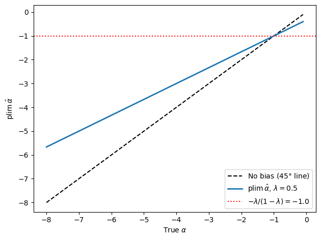
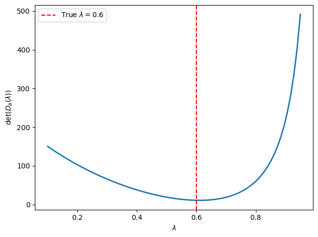
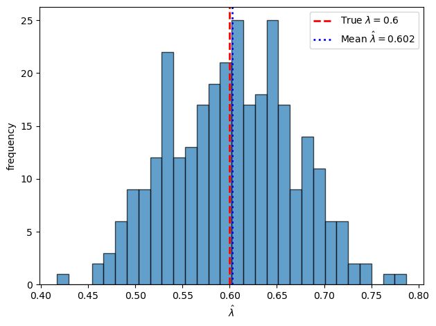
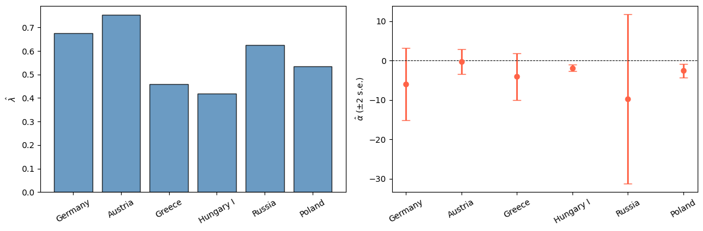
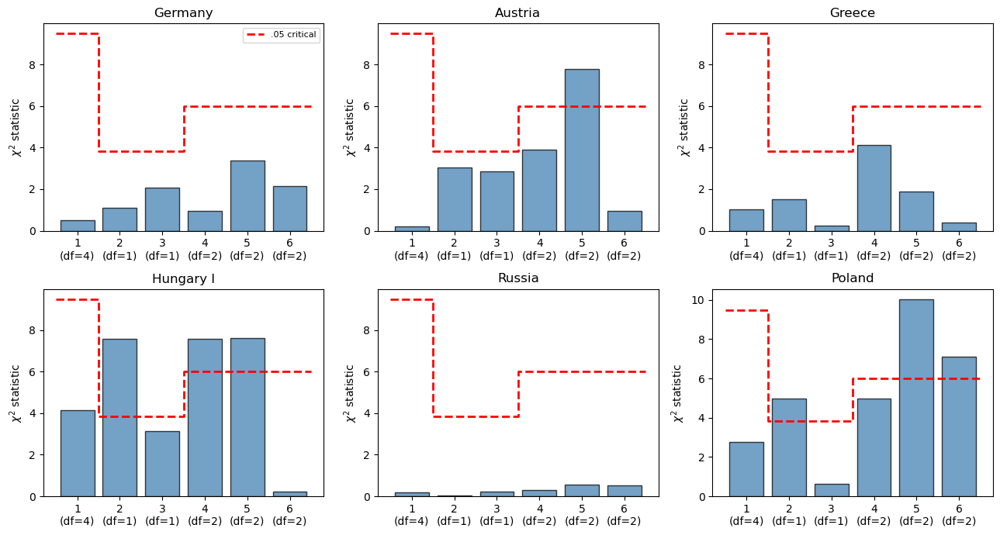
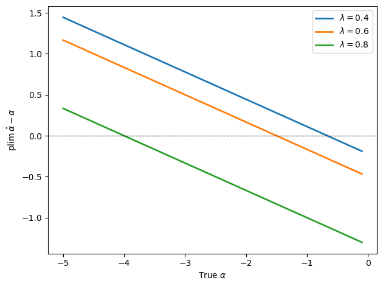

38. Demand for Money during Hyperinflations under Rational Expectations#
38.1. Overview#
This lecture presents the analysis in [Sargent, 1977], which proposes methods for estimating the demand schedule for money that Cagan [1956] used in his famous study of hyperinflation.
Sargent and Wallace [1973] pointed out that under assumptions making Cagan’s adaptive expectations equivalent to rational expectations, Cagan’s estimator of \(\alpha\) – the slope of log real balances with respect to expected inflation – is not statistically consistent.
This inconsistency matters because of a paradox that emerged when Cagan used his estimates of \(\alpha\) to calculate the sustained rates of inflation that would maximize the flow of real resources that money creators could command by printing money.
That “optimal” rate is \(-1/\alpha\).
For each of the seven hyperinflations in his sample, the reciprocal of Cagan’s estimate of \(-\alpha\) turned out to be less – and often very much less – than the actual average rate of inflation, suggesting that the creators of money expanded the money supply at rates far exceeding the revenue-maximizing rate.
A natural explanation is that this paradox is a statistical artifact – a consequence of biased estimates of \(\alpha\).
Table 1 reproduces the relevant data from Cagan.
Country |
(1) \(-1/\alpha\) |
(2) \((e^{1/\alpha}-1)\times 100\) |
(3) Avg. actual inflation |
|---|---|---|---|
Austria |
.117 |
12 |
47 |
Germany |
.183 |
20 |
322 |
Greece |
.244 |
28 |
365 |
Hungary I |
.115 |
12 |
46 |
Hungary II |
.236 |
32 |
19,800 |
Poland |
.435 |
54 |
81 |
Russia |
.327 |
39 |
57 |
Column (1): \(-1/\alpha\) (continuously compounded), the rate per month that maximizes the revenue of the money creator.
Column (2): \((e^{1/\alpha}-1)\times 100\) (neglects compounding).
Column (3): average actual rate of inflation per month.
The paper pursues three goals:
Characterize the asymptotic bias in Cagan’s ordinary-least-squares estimator under the rational expectations version of his model.
Derive a consistent estimator, a full-information maximum likelihood estimator, for the bivariate rational-expectations model.
Test the model by overfitting a more general vector autoregressive, moving-average representation and computing likelihood-ratio statistics.
Our key tools are bivariate Wold representations, Granger causality, and vector time series methods following Granger [1969], Sims [1972], Wilson [1973] and Anderson [1958].
Note
This lecture can be viewed as a bivariate version of the “reverse engineering” exercise of Muth [1960] that we described in Reverse Engineering a la Muth.
From a technical point of view this lecture is an exercise in applying vector time series models.
The model is interesting because it illustrates the difference between Granger causality and simple notions of one series leading another.
It also illustrates a difference between Granger causality and the separate notion of invariance with respect to an intervention.
We begin with imports:
import numpy as np
import matplotlib.pyplot as plt
from scipy.optimize import minimize_scalar
38.2. Cagan’s model under rational expectations#
For background on the Cagan model see A Monetarist Theory of Price Levels and Monetarist Theory of Price Levels with Adaptive Expectations.
Cagan’s model of hyperinflation builds on a demand schedule for real balances of the form
where \(m\) is the log of the money supply (which is always equal to the log of money demand); \(p\) is the log of the price level; \(\pi_t\) is the expected rate of inflation, i.e., the public’s subjective expectation of \(p_{t+1} - p_t\); and \(u_t\) is a random variable with mean zero.
Let \(x_t \equiv p_t - p_{t-1}\) be the inflation rate and \(\mu_t \equiv m_t - m_{t-1}\) be the percentage rate of money creation.
Note
A constant term has been omitted from (38.1), though one would be included in empirical work.
Cagan assumed that \(\pi_t\) was formed via the adaptive expectations scheme
where \(x_t = p_t - p_{t-1}\) is the rate of inflation, and \(L\) is the lag operator defined by \(L^n x_t = x_{t-n}\).
Under rational expectations we require that
where \(E_t x_{t+1}\) is the mathematical expectation of \(x_{t+1}\) conditional on information available as of time \(t\).[1]
Using (38.3) and recursions on (38.1), it is straightforward to show that under rational expectations we must have[2]
where \(\mu_t = m_t - m_{t-1}\) is the percentage rate of increase of the money supply.
Equation (38.4) characterizes the stochastic process for inflation as a function of the stochastic process for money creation.
The model asserts that (38.4) is invariant with respect to interventions in the form of changes in the stochastic process governing money creation.
In this sense, since changes in the stochastic process for money creation are supposed to produce predictable changes in the stochastic process for inflation, money “causes” inflation.
For Cagan’s adaptive expectations scheme (38.2) to be equivalent to rational expectations we require:
The necessary and sufficient condition for (38.5) to hold for all \(\alpha\) and all \(t\) is
For an arbitrary \(\mu\) process there exists a disturbance process \(u_t\) satisfying the above restriction, one in which \(E_t(u_{t+j} - u_{t+j-1})\) is a complicated function of lagged \(x\)’s and lagged \(\mu\)’s.
The paper therefore studies two sufficient conditions.
38.2.1. Two sufficient conditions#
The first sufficient condition is
where \(\eta_t\) is a serially uncorrelated random term with mean zero and variance \(\sigma_\eta^2\); we assume that \(E[\eta_t \mid u_{t-1}, \mu_{t-2}, \ldots, x_{t-1}, x_{t-2}, \ldots] = 0\).
Under (38.6), \(u_t\) follows a random walk, so
and hence
The second sufficient condition is
so a constant rate of money creation is expected over the future.
Under (38.6) and (38.7), the geometric sum in (38.5) equals \(1\) because \(\lvert -\alpha / (1-\alpha) \rvert < 1\) whenever \(\alpha < 0\).
Hence (38.5) reduces to
A process that satisfies (38.8) is[3]
where \(\varepsilon_t\) is a serially uncorrelated random term with mean zero and variance \(\sigma_\varepsilon^2\), and that satisfies
According to (38.9), the rate of money creation equals the expected rate of inflation plus a random term.
Equation (38.9) is compatible with a government that finances a substantial share of roughly fixed real expenditures by printing money.
Equation (38.9) is also compatible with a real-bills regime in which the monetary authority supplies whatever money the public demands at a fixed nominal interest rate or a fixed real money supply.
During the German hyperinflation, officials repeatedly described policy in just such real-bills terms, insisting that money creation was responding to inflation rather than causing it.
38.2.2. The bivariate process for inflation and money creation#
The foregoing establishes that if equations (38.6) and (38.9) obtain, Cagan’s adaptive expectations scheme is compatible with rational expectations and with the portfolio balance condition that he assumed.
Under these assumptions, inflation and money creation form the bivariate system
Equation (38.10) was obtained by first differencing (38.1) and then substituting for \(\pi_t\) from (38.2) and for \(u_t - u_{t-1}\) from (38.6).
The process (38.10)–(38.11) can be rewritten as
Equations (38.12) and (38.13) can be derived directly from (38.10) and (38.11); alternatively, see Sargent and Wallace [1973] for a somewhat different but equivalent way of deriving (38.12) and (38.13).
Note
By construction, the model implies \(E_{t-1}x_t = \frac{1-\lambda}{1-\lambda L} x_{t-1}\), so lagged money growth does not help predict current inflation once lagged inflation is known.
This Granger-causal pattern comes from the particular money-supply rule in (38.9), not from an invariant feature of the economy across monetary regimes.
38.3. Bias in Cagan’s estimator#
38.3.1. Bivariate Wold representation#
A convenient way to evaluate the asymptotic bias in Cagan’s estimator is to obtain a bivariate Wold representation for \((\Delta x_t, \Delta \mu_t)\).
Let \(\phi \equiv (\lambda + \alpha(1-\lambda))^{-1}\).
Decompose the money-supply shock as
where \(\rho\) is the regression coefficient of \(\varepsilon_t\) on \((\varepsilon_t - \eta_t)\):
and \(v_t\) is orthogonal to \((\varepsilon_t - \eta_t)\) by construction.
Substituting (38.14) into (38.13) and using (38.12) gives the triangular bivariate Wold representation
with fundamental noises \((\varepsilon_t - \eta_t)\) and \(v_t\).
The triangular structure confirms that \(\Delta x\) is econometrically exogenous with respect to \(\Delta\mu\), and that \(\Delta x\) Granger-causes \(\Delta\mu\) but not vice versa.
38.3.2. The population regression (Cagan’s estimator)#
Substituting (38.16) into (38.17) and applying the summation operator \((1-L)^{-1}\) gives the population regression that Cagan estimated:
where \(\bar{u}_t = \bar{u}_{t-1} + v_t\) follows a random walk orthogonal to the \(x\) process.
Now Cagan regarded this population projection as giving estimates of the structural equation
Comparing (38.18) with the corresponding structural form shows that:
Cagan’s estimator of \(\lambda\) is consistent.
Cagan’s estimator of \(\alpha\) is not consistent in general, and obeys
If \(\rho = 0\) and hence there are no money-supply shocks, then \(\operatorname{plim}\hat\alpha = -\lambda / (1-\lambda)\), which is the value derived by Sargent and Wallace [1973].
If \(\eta_t = 0\) for all \(t\), so there is no noise in the portfolio-balance equation, then \(\rho = 1\) and \(\operatorname{plim}\hat\alpha = \alpha\).
Note
It is noteworthy that the residuals in (38.18) follow a random walk.
Cagan [1956] and Barro [1970] both reported highly serially correlated residuals and very low Durbin–Watson statistics, which is consistent with this prediction.
The following functions implement \(\rho\) from (38.15) and the probability limit of Cagan’s estimator from (38.20).
def rho_from_moments(σ_ε2, σ_η2, σ_εη):
"""
Compute ρ = Cov(ε, ε-η) / Var(ε-η).
"""
var_diff = σ_ε2 - 2.0 * σ_εη + σ_η2
if np.isclose(var_diff, 0.0):
raise ValueError("Var(ε_t - η_t) must be positive.")
return (σ_ε2 - σ_εη) / var_diff
def plim_alpha_cagan(α, λ, σ_ε2=1.0, σ_η2=0.5, σ_εη=0.0):
"""
Asymptotic limit (population value) of Cagan's OLS estimator of α.
"""
ρ = rho_from_moments(σ_ε2, σ_η2, σ_εη)
return ρ * α - (1.0 - ρ) * λ / (1.0 - λ)
We plot the probability limit of Cagan’s estimator against the true \(\alpha\) to visualize the bias.
α_grid = np.linspace(-8.0, -0.1, 400)
λ = 0.5
σ_ε2, σ_η2, σ_εη = 1.0, 0.5, 0.0
valid = ~np.isclose(λ + α_grid * (1.0 - λ), 0.0)
α_plot = α_grid[valid]
plims = [plim_alpha_cagan(a, λ, σ_ε2, σ_η2, σ_εη) for a in α_plot]
ws_limit = -λ / (1.0 - λ)
fig, ax = plt.subplots()
ax.plot(α_plot, α_plot, 'k--', lw=1.5, label=r'No bias (45$\degree$ line)')
label = rf'$\operatorname{{plim}}\hat\alpha$, $\lambda={λ}$'
ax.plot(α_plot, plims, lw=2, label=label)
ax.axhline(ws_limit, color='r', ls=':', lw=1.5,
label=rf'$-\lambda/(1-\lambda) = {ws_limit:.1f}$')
ax.set_xlabel(r'True $\alpha$')
ax.set_ylabel(r'$\operatorname{plim}\hat\alpha$')
ax.legend()
plt.tight_layout()
plt.show()

Fig. 38.1 Bias of Cagan’s OLS estimator of \(\alpha\)#
The probability limit is a weighted average of the true \(\alpha\) and the Wallace-Sargent value \(-\lambda / (1-\lambda)\).
When the true \(\alpha\) is more negative than \(-\lambda / (1-\lambda)\), the bias pulls Cagan’s estimator toward zero.
38.4. Consistent estimator#
Equations (38.12) and (38.13) form a bivariate first-order moving average process in \((1-L)\mu_t\) and \((1-L)x_t\).
Assuming that the white noises \(\varepsilon_t\) and \(\eta_t\) are jointly normally distributed, the likelihood function of a sample of length \(T\) observations, \(t = 1, \ldots, T\), generated by (38.12)–(38.13) can be written down.
To apply the method of maximum likelihood, it is most convenient to write the model in its vector autoregressive form.
First note that from (38.11) we can write
Next from (38.12) we have
Substituting (38.22) into (38.21) and rearranging gives
In vector notation equations (38.21) and (38.23) can be written
Multiplying both sides of the equation by \((1-\lambda L)\cdot I\), where \(I\) is the \(2\times 2\) identity matrix, gives
or equivalently
Let
Premultiplying the preceding equation by
gives
or
where
Computing \(G_0^{-1}\begin{bmatrix}0&-\lambda\\\lambda+\alpha(1-\lambda)&-\lambda\end{bmatrix}\) explicitly and rearranging the above equation gives
Equation (38.25) is a vector first-order autoregression, first-order moving average process.
The random variables \(a_{1t}\), \(a_{2t}\) are the innovations in the \(x\) and \(\mu\) processes, respectively – the one-period-ahead forecasting errors for \(x_t\) and \(\mu_t\).
The \(a\)’s are related to the \(\varepsilon\)’s and \(\eta\)’s appearing in the structural equations of the model by
Notice that the first equation of (38.25) can be written as
It is straightforward to write this in the autoregressive form
Since \(E_{t-1}a_{1t} = 0\), we have
The second equation of (38.25) can be written as
But from (38.27) we have \((1-\lambda)x_{t-1} = (1-\lambda L)x_t - (1-\lambda L)a_{1t}\), which when substituted into the above equation gives
or
From (38.28) it follows that
The triangular character of representation (38.25) demonstrates that \(\mu\) does not “cause” in Granger’s sense (i.e., help predict, once lagged own values are taken into account) the variable \(x\).
Thus, \(x\) is econometrically exogenous with respect to \(\mu\).[4]
On the other hand, \(x_t\) does cause the variable \(\mu_t\).
Even stronger, the model implies that \(E_{t-1}\mu_t = E_{t-1}x_t = \left(\tfrac{1-\lambda}{1-\lambda L}\right)x_{t-1}\), so that lagged \(\mu\)’s don’t help predict \(\mu\) once lagged \(x\)’s are taken into account.
That \(x\) causes \(\mu\) in Granger’s sense is not to be confused with \(x\)’s “leading” \(\mu\) in any National Bureau sense.
On the contrary, according to (38.28), \(x_t\) and \(\mu_t\) are “in phase” with one another, neither one leading the other.
Their cross-spectrum has zero phase at all frequencies.
Evidence that \(x\) leads \(\mu\) would not be consistent with the model being studied here.
The vector autoregressive, moving average process (38.25) is in a form that can be estimated by the maximum likelihood estimator described by Wilson [1973].
It is essential that the matrices multiplying current \(\begin{bmatrix}a_{1t}\\a_{2t}\end{bmatrix}\) and current \(\begin{bmatrix}x_t\\\mu_t\end{bmatrix}\) both be identity matrices in order to apply the method, so that each \(a_i\) process can be interpreted as the residual from a vector autoregression either for \(\mu_t\) or \(x_t\).
Let
and let \(D_a\) be the covariance matrix of \(a_t\),
The likelihood function of the sample \(t = 1, \ldots, T\) can now be written as
Given initial values for \((a_{10}, a_{20})\) – equivalently for \((\varepsilon_0, \eta_0)\) – and given a value of \(\lambda\), equation (38.24) or (38.25) can be used to solve for \(a_t\), \(t = 1, \ldots, T\).
(We take \(a_{10} = a_{20} = 0\).)
Wilson [1973] notes that maximizing (38.30) is equivalent to minimizing with respect to \(\lambda\) the determinant of the estimated covariance matrix of the \(a_t\)’s,
where the \(\hat{a}_t\)’s are determined by solving (38.25) recursively and so depend on \(\lambda\).
The covariance matrix of the \(a\)’s is estimated as
evaluated at the value of \(\lambda\) that minimizes (38.31).
The resulting estimates are known to be statistically consistent (see [Wilson, 1973]).
Notice that \(\alpha\) does not appear explicitly in the likelihood function, but only indirectly by way of the elements of \(D_a\), namely \(\sigma_{11}\), \(\sigma_{12}\), and \(\sigma_{22}\).
That this must be so can be seen by inspecting representation (38.25), in which \(\lambda\) appears explicitly but \(\alpha\) does not.
On the basis of the four parameters \(\lambda\), \(\sigma_{11}\), \(\sigma_{12}\), and \(\sigma_{22}\) that are identified by (38.25) – i.e., that characterize the likelihood function (38.30) – we can think of attempting to estimate the five parameters of the model: \(\alpha\), \(\lambda\), \(\sigma_\varepsilon^2\), \(\sigma_\eta^2\), and \(\sigma_{\varepsilon\eta}\).
Not surprisingly, some of the parameters are underidentified.
In particular, while \(\lambda\) and \(\sigma_\varepsilon^2\) are identified, \(\alpha\), \(\sigma_\eta^2\), and \(\sigma_{\varepsilon\eta}\) are not separately identified.
To see that \(\alpha\) and \(\sigma_{\varepsilon\eta}\) are not identified, note that from equation (38.26) the identifiable parameters \(\sigma_{11}\), \(\sigma_{12}\), and \(\sigma_{22}\) are related to the structural parameters \(\sigma_\varepsilon^2\), \(\sigma_\eta^2\), \(\sigma_{\varepsilon\eta}\), \(\alpha\), and \(\lambda\) by
These equations imply
Do there exist offsetting changes in \(\alpha\) and \(\sigma_{\varepsilon\eta}\) that leave both (38.35) and (38.36) satisfied with \(\sigma_{11}\), \(\sigma_{22}\), and \(\sigma_{12}\) unchanged?
That is, holding \(\lambda\) and \(\sigma_\varepsilon^2\) constant, can we change \(\alpha\) and \(\sigma_{\varepsilon\eta}\) in offsetting ways that leave \(\sigma_{11}\), \(\sigma_{12}\), and \(\sigma_{22}\) constant?
The answer is yes, as can be seen by differentiating (38.35) and (38.36) and setting \(d\sigma_{12} = d\sigma_{11} = d\sigma_{22} = d\lambda = d\sigma_\varepsilon^2 = 0\):
Dividing (38.38) by \(2(1-\lambda)\) gives (38.37), which proves that if \(d\alpha\) and \(d\sigma_{\varepsilon\eta}\) obey (38.37), both (38.35) and (38.36) will remain satisfied.
Thus there exist offsetting changes in \(\alpha\) and \(\sigma_{\varepsilon\eta}\) that leave the identifiable parameters \(\sigma_{11}\), \(\sigma_{12}\), and \(\sigma_{22}\) unaltered.
It follows that \(\sigma_{\varepsilon\eta}\) and \(\alpha\) are not separately identifiable.
It is evident from (38.25) or (38.30) that \(\lambda\) is identified.
To see that \(\sigma_\varepsilon^2\) is identifiable, simply recall that \(\varepsilon_t\) obeys the feedback rule
so that, given \(\lambda\) and samples of \(\mu_t\) and \(x_t\), \(\sigma_\varepsilon^2\) is identifiable as the variance of the residual in the above equation.
To proceed to extract estimates of \(\alpha\) it is necessary to impose a value of \(\sigma_{\varepsilon\eta}\).
We impose the condition \(\sigma_{\varepsilon\eta} = 0\), so that shocks to the money supply rule and shocks to portfolio balance are uncorrelated.
It is straightforward to calculate
which expands to
Imposing \(\sigma_{\varepsilon\eta} = 0\), we have
which implies that \(\alpha\) is to be estimated by
Let this estimator of \(\alpha\) be
Let \(\Sigma_\theta\) be the estimated asymptotic covariance matrix of \(\theta\).
Then the asymptotic variance of \(\hat{\alpha}\) will be estimated as
where \((\partial g/\partial\theta)_\theta\) is the \((1\times 4)\) vector of partial derivatives of \(g\) with respect to \(\theta\) evaluated at the maximum likelihood estimates \(\hat{\theta}\).
The asymptotic covariance matrix of \((\lambda,\sigma_{11},\sigma_{12},\sigma_{22})\) is given by
where \(T\sigma_\lambda^2\) is estimated by
and where \(\log L\) is the natural logarithm of the likelihood function (38.30).
Notice that the maximum likelihood estimate of \(\lambda\) is asymptotically orthogonal to the estimates \(\sigma_{11}\), \(\sigma_{12}\), \(\sigma_{22}\).
The preceding formula for \(\Sigma_\theta\) can be derived by applying results of [Wilson, 1973] and Anderson [1958] [pp. 159–161].
In the computations summarized below, the components \(\sigma_{11}\), \(\sigma_{12}\), and \(\sigma_{22}\) were estimated by
the maximum likelihood estimator.
The term \(\left(-\partial^2\log L/\partial\lambda^2\right)_\theta\) was estimated numerically in the course of minimizing (38.31) to obtain the maximum likelihood estimates.
It bears emphasizing that \(\alpha\) is identifiable at all only on the basis of a restriction on \(\sigma_{\varepsilon\eta}\), and that the estimator of \(\alpha\) obtained by imposing \(\sigma_{\varepsilon\eta} = 0\) depends sensitively on the covariance matrix of the errors in forecasting \(x_t\) and \(\mu_t\) from the past.
The estimates of \(\alpha\) thereby obtained ought to be regarded as very delicate.
38.4.1. Implementing the MLE#
The innovation recursions following directly from equations (38.27)–(38.28) can be written compactly as
A crucial feature of this representation is that \(\alpha\) does not appear in either (38.40) or (38.41), so the only structural parameter needed to extract innovations is \(\lambda\).
Maximizing the likelihood (38.30) is therefore equivalent to choosing \(\lambda\) to minimize
where the innovations depend on \(\lambda\) through (38.40).
The following function simulates the bivariate process (38.12)–(38.13) by drawing shocks \((\varepsilon_t, \eta_t)\) and constructing \(\Delta x_t\) and \(\Delta\mu_t\) from their MA(1) representations.
def simulate_bivariate(α, λ, T=200, σ_ε2=1.0,
σ_η2=0.5, σ_εη=0.0, seed=42):
"""
Simulate the bivariate rational-expectations model and return
arrays x (inflation) and μ (money growth).
"""
rng = np.random.default_rng(seed)
cov = np.array([[σ_ε2, σ_εη], [σ_εη, σ_η2]])
shocks = rng.multivariate_normal([0.0, 0.0], cov, size=T)
ε, η = shocks[:, 0], shocks[:, 1]
denom = λ + α * (1.0 - λ)
if np.isclose(denom, 0.0):
raise ValueError("λ + α(1-λ) must be nonzero.")
φ = 1.0 / denom
Δx = np.zeros(T)
Δμ = np.zeros(T)
for t in range(T):
e_prev = ε[t-1] if t > 0 else 0.0
η_prev = η[t-1] if t > 0 else 0.0
Δx[t] = φ * (ε[t] - η[t]) - φ * λ * (e_prev - η_prev)
Δμ[t] = (φ * (1.0 - λ) + 1.0) * ε[t] - φ * (1.0 - λ) * η[t] - e_prev
x = np.cumsum(Δx)
μ = np.cumsum(Δμ)
return x, μ
Next we implement the innovation recursions (38.40)–(38.41) to recover \((a_{1t}, a_{2t})\) from observed data.
def compute_innovations(x, μ, λ):
"""
Recover the innovations (a_{1t}, a_{2t}) from observed x and μ
using the recursion from eqs. (29)-(30) of the paper:
a_{1t} = Δx_t + λ a_{1,t-1}
a_{2t} = μ_t - x_t + a_{1t}
Only λ is required -- α does not enter the innovation extraction.
Returns arrays a1 and a2 of length T.
"""
T = len(x)
a1 = np.zeros(T)
a2 = np.zeros(T)
a1_prev = 0.0
x_prev = 0.0
for t in range(T):
a1[t] = (x[t] - x_prev) + λ * a1_prev
a2[t] = μ[t] - x[t] + a1[t]
x_prev = x[t]
a1_prev = a1[t]
return a1, a2
With the innovations in hand, we can evaluate the MLE criterion (38.42) and minimize it over \(\lambda\).
def mle_criterion(λ_val, x, μ):
"""
Evaluate the MLE criterion det(D_a(λ)) for a given λ.
Because α does not enter the innovation extraction, the determinant
of the innovation second-moment matrix depends only on λ. Minimizing
this over λ gives the Wilson (1973) maximum likelihood estimate.
"""
a1, a2 = compute_innovations(x, μ, λ_val)
A = np.vstack([a1, a2])
Da = A @ A.T / len(x)
return np.linalg.det(Da)
def estimate_lambda_mle(x, μ, bounds=(0.01, 0.99)):
"""
Compute the Wilson-Sargent MLE of λ by minimizing eq. (33).
"""
result = minimize_scalar(
lambda λ_val: mle_criterion(λ_val, x, μ),
bounds=bounds,
method='bounded'
)
return result.x
We simulate a sample from the model and plot the MLE criterion as a function of \(\lambda\) to verify that it is minimized near the true value.
# Simulated sample
α_true, λ_true = -2.0, 0.6
x_sim, μ_sim = simulate_bivariate(α_true, λ_true, T=300)
λ_hat = estimate_lambda_mle(x_sim, μ_sim)
λ_grid = np.linspace(0.1, 0.95, 80)
# α unused
crit = [mle_criterion(lv, x_sim, μ_sim)
for lv in λ_grid]
fig, ax = plt.subplots()
ax.plot(λ_grid, crit, lw=2)
ax.axvline(λ_true, color='r', ls='--', label=rf'True $\lambda = {λ_true}$')
ax.set_xlabel(r'$\lambda$')
ax.set_ylabel('det$(D_a(\lambda))$')
ax.legend()
plt.tight_layout()
plt.show()
print(f"Estimated λ from this sample: {λ_hat:.3f}")

Fig. 38.2 MLE criterion as a function of \(\lambda\)#
Estimated λ from this sample: 0.610
The MLE criterion attains its minimum near the true value \(\lambda = 0.6\), confirming that the Wilson–Sargent full-information maximum likelihood estimator successfully recovers the adaptive expectations parameter.
38.5. An alternative instrumental variable estimator#
When \(\sigma_{\varepsilon\eta} = 0\) (money-supply shocks and portfolio-balance shocks are uncorrelated), Sargent shows that an instrumental variable estimator is available.
From the vector autoregressive representation (38.25), the innovations satisfy
On the restriction \(\sigma_{\varepsilon\eta} = 0\), these one-step-ahead forecast errors can be used to construct an instrument from the estimated innovations in inflation.
The paper’s two-step procedure is:
Estimate the univariate MA(1) for \((1-L)x_t\):
by maximum likelihood.
This yields a consistent estimate of \(\lambda\) and the residuals \(\hat a_{1t}\).
Use those fitted innovations to form an instrument for expected inflation, and then estimate Cagan’s money-demand equation by nonlinear least squares.
This procedure yields consistent estimates of \(\alpha\) and \(\lambda\) when \(\sigma_{\varepsilon\eta} = 0\).
For this lecture, we illustrate the first stage.
It is the step that identifies \(\lambda\) and constructs the estimated inflation innovations that the paper then turns into an instrument for the second-stage nonlinear regression.
def univariate_ma1_mle(Δx):
"""
Estimate λ and the innovations a_{1t} from the univariate MA(1)
(1-L)x_t = (1 - λL) a_{1t} by minimizing the innovation variance.
"""
T = len(Δx)
def criterion(lam):
a = np.zeros(T)
a[0] = Δx[0]
for t in range(1, T):
a[t] = Δx[t] + lam * a[t-1]
return np.mean(a**2)
result = minimize_scalar(criterion, bounds=(0.01, 0.99), method='bounded')
λ_hat = result.x
a_hat = np.zeros(T)
a_hat[0] = Δx[0]
for t in range(1, T):
a_hat[t] = Δx[t] + λ_hat * a_hat[t-1]
return λ_hat, a_hat
We run a Monte Carlo experiment to examine the sampling distribution of the first-stage estimator \(\hat\lambda\).
α_true, λ_true = -2.0, 0.6
n_sims = 300
λ_hats = []
σ_ε2, σ_η2, σ_εη = 1.0, 0.5, 0.0
for seed in range(n_sims):
x_s, μ_s = simulate_bivariate(α_true, λ_true, T=150,
σ_ε2=σ_ε2, σ_η2=σ_η2,
σ_εη=σ_εη, seed=seed)
Δx_s = np.diff(x_s)
λ_h, _ = univariate_ma1_mle(Δx_s)
λ_hats.append(λ_h)
fig, ax = plt.subplots()
ax.hist(λ_hats, bins=30, edgecolor='k', alpha=0.7)
ax.axvline(λ_true, color='r', lw=2, ls='--',
label=rf'True $\lambda={λ_true}$')
ax.axvline(np.mean(λ_hats), color='b', lw=2, ls=':',
label=rf'Mean $\hat\lambda={np.mean(λ_hats):.3f}$')
ax.set_xlabel(r'$\hat\lambda$')
ax.set_ylabel('frequency')
ax.legend()
plt.tight_layout()
plt.show()

Fig. 38.3 First-stage sampling distribution of \(\hat\lambda\)#
The sampling distribution of \(\hat\lambda\) is centered near the true value, confirming consistency of the first-stage estimator.
38.6. Testing the rational expectations version of Cagan’s model#
38.6.1. The overparameterized system#
Representation (38.25) is a special case of the general vector ARMA(1,1):
where \(C\) and \(B\) are general \(2\times 2\) matrices.
In the restricted model (38.25), seven linear restrictions have been imposed on the eight parameters \((c_{11}, c_{12}, c_{21}, c_{22}, b_{11}, b_{12}, b_{21}, b_{22})\) of the general system (38.45) so that the systematic part involves only the single parameter \(\lambda\).
The six overparameterizations used to test the model relax various subsets of these restrictions.
The parameterizations are:
# |
\(C\) |
\(B\) |
Free parameters |
|---|---|---|---|
1 |
Full \(2\times 2\) |
Restricted \(B(\lambda)\) |
4 |
2 |
Restricted \(C(\lambda)\) |
Full \(2\times 2\) |
1 |
3 |
\(\begin{bmatrix}c_1 & 0 \\ c_1 & c_1\end{bmatrix}\) |
Restricted |
1 |
4 |
\(\begin{bmatrix}c_1 & c_{12} \\ c_1 & c_1\end{bmatrix}\) |
Restricted |
2 |
5 |
Full off-diagonal |
Restricted |
2 |
6 |
Restricted |
Full off-diagonal |
2 |
The restricted model is tested against each overparameterization using the likelihood-ratio statistic
where \(q\) is the number of restrictions relaxed.
High values lead to rejection of the restricted model (38.25).
38.6.2. Empirical results#
Table 2 reports the maximum likelihood estimates for Cagan’s data under \(\sigma_{\varepsilon\eta} = 0\):
Country |
\(\hat\lambda\) |
\(\hat\alpha\) |
\(\hat\sigma_{11}\) |
\(\hat\sigma_{12}\) |
\(\hat\sigma_{22}\) |
|---|---|---|---|---|---|
Germany (Oct ‘20-Jul ‘23) |
.677 (.053) |
-5.97 (4.62) |
.0625 |
.0158 |
.0091 |
Austria (Feb ‘21-Aug ‘22) |
.754 (.059) |
-0.31 (1.57) |
.0385 |
.0148 |
.0085 |
Greece (Feb ‘43-Aug ‘44) |
.459 (.088) |
-4.09 (2.97) |
.0675 |
.0245 |
.0279 |
Hungary I (Aug ‘22-Feb ‘24) |
.418 (.067) |
-1.84 (0.40) |
.0362 |
.0089 |
.0060 |
Russia (Feb ‘22-Jan ‘24) |
.626 (.073) |
-9.75 (10.74) |
.0524 |
.0138 |
.0205 |
Poland (May ‘22-Nov ‘23) |
.536 (.072) |
-2.53 (0.86) |
.0566 |
.0149 |
.0089 |
Standard errors in parentheses.
The paper also reports a parallel table for Barro’s high-inflation data.
We keep the focus here on Cagan’s sample because it is the source of the original paradox in Table 1.
The striking feature is how loose the estimates of \(\alpha\) become.
For Germany, Austria, and Russia the standard error is of the same order as the point estimate, while Hungary I is the only case in which \(\alpha\) is estimated with much precision.
Hungary I is the standout case.
With \(\hat\alpha = -1.84\), the implied revenue-maximizing inflation rate \(-1/\hat\alpha\) is about 54 percent per month, close to the observed 46 percent.
In Sargent’s reading, this is the one hyperinflation in which the maximum likelihood estimate substantially weakens Cagan’s paradox.
For the other countries, the point estimates do not eliminate the paradox, but two-standard-error bands still include values of \(\alpha\) that would.
Table 3 reports the chi-square statistics for Cagan’s data:
Country |
Para. 1 \(\chi^2(4)\) |
2 \(\chi^2(1)\) |
3 \(\chi^2(1)\) |
4 \(\chi^2(2)\) |
5 \(\chi^2(2)\) |
6 \(\chi^2(2)\) |
|---|---|---|---|---|---|---|
Germany |
0.52 |
1.12 |
2.06 |
0.95 |
3.37 |
2.14 |
Russia |
0.21 |
3.05 |
2.84 |
3.90 |
7.79* |
0.97 |
Greece |
1.04 |
1.53 |
0.25 |
4.14 |
1.87 |
0.40 |
Hungary I |
4.13 |
7.57** |
3.13 |
7.57** |
7.62** |
0.24 |
Poland |
0.19 |
0.04 |
0.22 |
0.31 |
0.56 |
0.53 |
Austria |
2.77 |
4.97* |
0.63 |
4.97* |
10.05** |
7.13** |
Critical values: \(\chi^2(1)_{.05} = 3.84\), \(\chi^2(2)_{.05} = 5.99\), \(\chi^2(4)_{.05} = 9.49\). * Significant at .05. ** Significant at .01.
The following figures visualize the estimates from Table 2 and the chi-square statistics from Table 3.
countries = ['Germany', 'Austria', 'Greece', 'Hungary I', 'Russia', 'Poland']
λ_ml = [.677, .754, .459, .418, .626, .536]
α_ml = [-5.97, -0.31, -4.09, -1.84, -9.75, -2.53]
α_se = [4.62, 1.57, 2.97, 0.40, 10.74, 0.86]
fig, axes = plt.subplots(1, 2, figsize=(12, 4))
axes[0].bar(countries, λ_ml, edgecolor='k', color='steelblue', alpha=0.8)
axes[0].set_ylabel(r'$\hat\lambda$')
axes[0].tick_params(axis='x', rotation=30)
axes[1].errorbar(range(len(countries)), α_ml, yerr=[2*s for s in α_se],
fmt='o', color='tomato', capsize=5, lw=2)
axes[1].axhline(0, color='k', lw=0.7, ls='--')
axes[1].set_xticks(range(len(countries)))
axes[1].set_xticklabels(countries, rotation=30)
axes[1].set_ylabel(r'$\hat\alpha$ ($\pm$2 s.e.)')
plt.tight_layout()
plt.show()

Fig. 38.4 ML estimates of \(\hat\lambda\) versus \(|\hat\alpha|\)#
chi2 = np.array([
[0.52, 1.12, 2.06, 0.95, 3.37, 2.14], # Germany
[0.21, 3.05, 2.84, 3.90, 7.79, 0.97], # Russia
[1.04, 1.53, 0.25, 4.14, 1.87, 0.40], # Greece
[4.13, 7.57, 3.13, 7.57, 7.62, 0.24], # Hungary I
[0.19, 0.04, 0.22, 0.31, 0.56, 0.53], # Poland
[2.77, 4.97, 0.63, 4.97, 10.05, 7.13], # Austria
])
param_labels = ['1\n(df=4)', '2\n(df=1)', '3\n(df=1)',
'4\n(df=2)', '5\n(df=2)', '6\n(df=2)']
crit_05 = [9.49, 3.84, 3.84, 5.99, 5.99, 5.99]
fig, axes = plt.subplots(2, 3, figsize=(13, 7), sharex=False)
for idx, (ax, country, row) in enumerate(
zip(axes.flat, countries, chi2)):
ax.bar(param_labels, row, edgecolor='k', color='steelblue', alpha=0.75)
ax.step(np.arange(-0.5, 6.5), crit_05 + [crit_05[-1]],
where='post', color='r', lw=2, ls='--', label='.05 critical')
ax.set_title(country)
ax.set_ylabel(r'$\chi^2$ statistic')
if idx == 0:
ax.legend(fontsize=8)
plt.tight_layout()
plt.show()

Fig. 38.5 Overfitting chi-square statistics#
38.6.3. Main findings#
Germany, Greece, and Poland are not rejected at the .95 level by any of the six parameterizations.
Hungary I and Austria are rejected by several parameterizations.
Russia is rejected under parameterization 5.
It is remarkable that a representation with only a single free parameter (\(\lambda\)) in its systematic part survives overfitting tests for three of the six hyperinflations.
38.7. Summary#
The main results of this paper are:
Under the conditions that make Cagan’s adaptive expectations scheme equivalent to rational expectations, Cagan’s OLS estimator of \(\alpha\) is inconsistent because inflation and money creation are determined simultaneously.
A bivariate Wold representation with a triangular structure shows that inflation Granger-causes money creation, but not vice versa – consistent with empirical findings that feedback runs from inflation to money creation.
The structural parameter \(\alpha\) is not identifiable from the likelihood function alone.
Identification requires an additional restriction, namely \(\sigma_{\varepsilon\eta} = 0\) (uncorrelated portfolio-balance and money-supply shocks).
The resulting estimates of \(\alpha\) carry very large standard errors.
The large standard errors mean that confidence intervals of two standard errors on each side of the point estimates include values of \(\alpha\) that would imply money creators were maximizing seignorage revenue – potentially explaining the paradox noted by Cagan.
Likelihood-ratio overfitting tests do not decisively reject the one-parameter rational-expectations model for Germany, Greece, and Poland.
The results suggest that the demand for money in hyperinflation may not have been as well isolated as previously thought, and that the slope of the portfolio balance schedule is difficult or impossible to estimate precisely under the money supply regimes that prevailed during the hyperinflations.
38.8. Exercises#
The function below computes the autocovariances of \((1-L)x\) and \((1-L)\mu\) and their cross-covariances.
We will use these moments to evaluate the bias in Cagan’s estimator and to construct a consistent estimator.
def bivariate_ma1_moments(α, λ, σ_ε2=1.0, σ_η2=0.5, σ_εη=0.0):
"""
Compute the autocovariances of (1-L)x and (1-L)μ under the
bivariate rational-expectations model of Sargent (1977).
Parameters:
α : float (< 0) demand semi-elasticity
λ : float (0 < λ < 1) adaptive expectations parameter
σ_ε2 : variance of money-supply shock ε_t
σ_η2 : variance of portfolio shock η_t
σ_εη : covariance of ε_t and η_t
Returns:
cxx : dict with keys 0, 1 -- autocovariances of Δx
cμμ : dict with keys 0, 1 -- autocovariances of Δμ
cxμ : dict with keys -1, 0, 1 -- cross-covariances E[Δx_t Δμ_{t-τ}]
"""
denom = λ + α * (1.0 - λ)
if np.isclose(denom, 0.0):
raise ValueError("λ + α(1-λ) must be nonzero.")
φ = 1.0 / denom
# MA(1) forms for Δx_t and Δμ_t
# Δμ_t = [φ(1-λ)+1]ε_t - φ(1-λ)η_t - ε_{t-1}
A = φ * (1.0 - λ) + 1.0
B = φ * (1.0 - λ)
var_diff = σ_ε2 - 2.0 * σ_εη + σ_η2
cxx0 = φ**2 * (1 + λ**2) * var_diff
cxx1 = -φ**2 * λ * var_diff
cμμ0 = (A**2 + 1.0) * σ_ε2 + B**2 * σ_η2 - 2.0 * A * B * σ_εη
cμμ1 = -A * σ_ε2 + B * σ_εη
cxμ0 = φ * ((A + λ) * σ_ε2 + B * σ_η2 - (A + B + λ) * σ_εη)
cxμ1 = -φ * λ * (A * σ_ε2 + B * σ_η2 - (A + B) * σ_εη)
cxμm1 = -φ * (σ_ε2 - σ_εη)
cxx = {0: cxx0, 1: cxx1}
cμμ = {0: cμμ0, 1: cμμ1}
cxμ = {-1: cxμm1, 0: cxμ0, 1: cxμ1}
return cxx, cμμ, cxμ
Exercise 38.1
Using bivariate_ma1_moments, compute all nonzero autocovariances of
\((1-L)x_t\) and \((1-L)\mu_t\) for \(\alpha = -2.0\), \(\lambda = 0.6\),
\(\sigma_\varepsilon^2 = 1.0\), \(\sigma_\eta^2 = 0.5\), and
\(\sigma_{\varepsilon\eta} = 0\).
Verify numerically that the spectral density matrix is positive semidefinite at several frequencies \(\omega \in [0, \pi]\).
Solution
α, λ = -2.0, 0.6
cxx, cμμ, cxμ = bivariate_ma1_moments(α, λ)
print("Autocovariances of Δx:")
for τ, v in cxx.items():
print(f" c_xx({τ}) = {v:.6f}")
print("\nAutocovariances of Δμ:")
for τ, v in cμμ.items():
print(f" c_μμ({τ}) = {v:.6f}")
print("\nCross-covariances E[Δx_t Δμ_{t-τ}]:")
for τ, v in cxμ.items():
print(f" c_xμ({τ}) = {v:.6f}")
# Check PSD
ω_grid = np.linspace(0, np.pi, 50)
min_eig = np.inf
for ω in ω_grid:
z = np.exp(-1j * ω)
Sxx = cxx[1]*np.conj(z) + cxx[0] + cxx[1]*z
Sμμ = cμμ[1]*np.conj(z) + cμμ[0] + cμμ[1]*z
Sxμ = cxμ[-1]*z + cxμ[0] + cxμ[1]*np.conj(z)
S = np.array([[np.real(Sxx), np.real(Sxμ)],
[np.real(Sxμ), np.real(Sμμ)]])
eigs = np.linalg.eigvalsh(S)
min_eig = min(min_eig, eigs.min())
print(f"\nMin eigenvalue of S(ω) over grid: {min_eig:.6f}")
print("Spectral density matrix positive semidefinite:", min_eig >= -1e-10)
Autocovariances of Δx:
c_xx(0) = 51.000000
c_xx(1) = -22.500000
Autocovariances of Δμ:
c_μμ(0) = 4.000000
c_μμ(1) = 1.000000
Cross-covariances E[Δx_t Δμ_{t-τ}]:
c_xμ(-1) = 5.000000
c_xμ(0) = 7.000000
c_xμ(1) = -6.000000
Min eigenvalue of S(ω) over grid: -0.000000
Spectral density matrix positive semidefinite: True
Exercise 38.2
Using plim_alpha_cagan, plot the asymptotic bias \(\operatorname{plim}\hat\alpha - \alpha\)
as a function of \(\alpha\) for three values of \(\lambda \in \{0.4, 0.6, 0.8\}\),
setting \(\sigma_\varepsilon^2 = 1\), \(\sigma_\eta^2 = 0.5\), and
\(\sigma_{\varepsilon\eta} = 0\).
How does the bias depend on \(\lambda\) and on the location of the Wallace-Sargent value \(-\lambda / (1-\lambda)\)?
Solution
Here is one solution.
The following code plots the bias of Cagan’s estimator as a function of \(\alpha\) for three values of \(\lambda\)
α_grid = np.linspace(-5.0, -0.1, 300)
λ_vals = [0.4, 0.6, 0.8]
σ_ε2, σ_η2, σ_εη = 1.0, 0.5, 0.0
fig, ax = plt.subplots()
for λ in λ_vals:
valid = ~np.isclose(λ + α_grid * (1.0 - λ), 0.0)
α_plot = α_grid[valid]
bias = [plim_alpha_cagan(a, λ, σ_ε2, σ_η2, σ_εη) - a
for a in α_plot]
ax.plot(α_plot, bias, lw=2, label=rf'$\lambda={λ}$')
ax.axhline(0, color='k', lw=0.7, ls='--')
ax.set_xlabel(r'True $\alpha$')
ax.set_ylabel(r'$\operatorname{plim}\hat\alpha - \alpha$')
ax.legend()
plt.tight_layout()
plt.show()

The bias changes sign at the Wallace-Sargent value \(-\lambda / (1-\lambda)\).
For \(\alpha\) values more negative than that benchmark, the estimator is biased toward zero, while for less negative values it is biased away from zero.
Exercise 38.3
Use the univariate first-stage estimator univariate_ma1_mle to estimate
\(\lambda\) from 500 simulated samples of length \(T = 100\) from the true model
with \(\alpha = -2.0\) and \(\lambda = 0.6\).
Compute the mean and standard deviation of \(\hat\lambda\) across simulations.
Compare with a sample of length \(T = 500\).
What do you conclude about the rate of convergence?
Solution
α_true, λ_true = -2.0, 0.6
n_sims = 500
for T in [100, 500]:
λ_hats = []
for seed in range(n_sims):
x_s, _ = simulate_bivariate(α_true, λ_true, T=T, seed=seed)
Δx_s = np.diff(x_s)
λ_h, _ = univariate_ma1_mle(Δx_s)
λ_hats.append(λ_h)
print(f"T={T:4d}: mean λ_hat = {np.mean(λ_hats):.4f}, "
f"std(λ_hat) = {np.std(λ_hats):.4f}")
T= 100: mean λ_hat = 0.6011, std(λ_hat) = 0.0829
T= 500: mean λ_hat = 0.6041, std(λ_hat) = 0.0357
The standard deviation shrinks roughly as \(1/\sqrt{T}\), consistent with \(\sqrt{T}\)-consistent estimation of \(\lambda\).